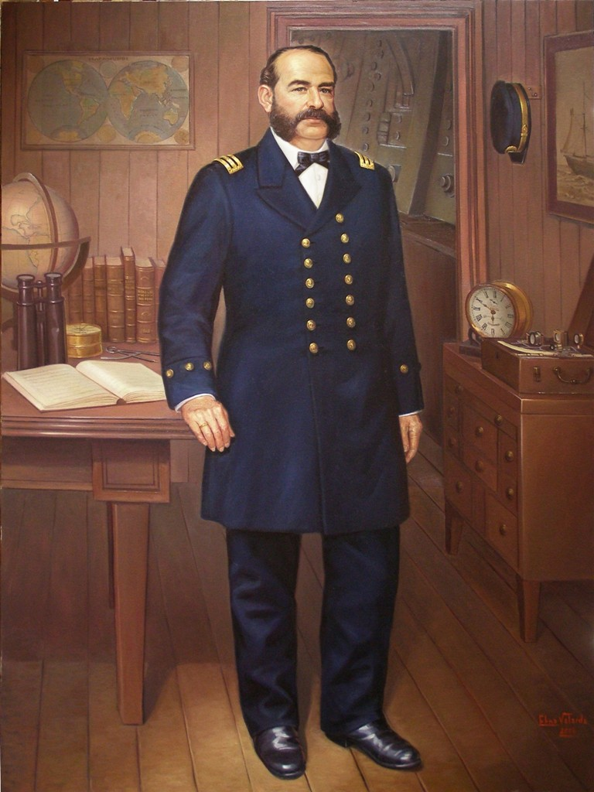

El caballero de los mares, fue nombrado asi
por su respeto y actitud solidaria ante el enemigo durante la guerra con Chile.
Linea de tiempo de la vida de Miguel Grau
- 1834: 27 de Julio 1834, nacio en Paita Perú.
- 1843: 25 Agosto 1843, Aprendiz de Grumete.
- 1854: 25 Agosto, Ingreso a la Marina de guerra del Perú
- 1866: 7 de Febrero, El combate de Abtao (escuadra española contra la flota chileno-peruana).
- 1867: 12 de Abril, se casó con la dama limeña Dolores Cabero y Núñez.
- 1868: 27 de Febrero, Nombrado como comandante del Huáscar.
- 1875: Grau fue elegido diputado por la provincia de Paita.
- 1879: 21 may 1879, Combate de Iquique – Rescato a los sobrevivientes de la Esmeralda.
- 1879: 26 de mayo 1879 – Combate de Antofagasta.
- 1879: El 8 de octubre de 1879, Combate de Angamos y Muerte de Graú.